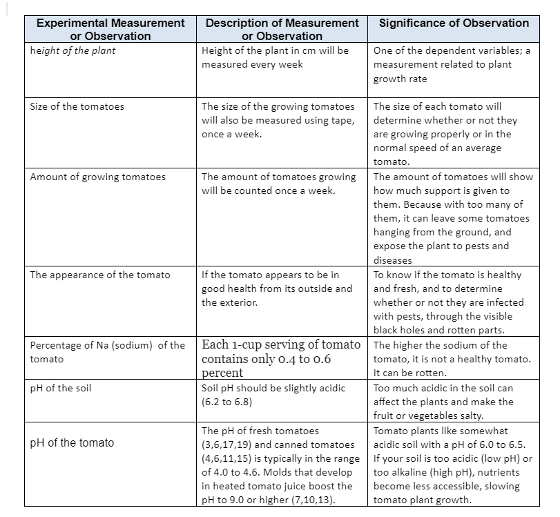
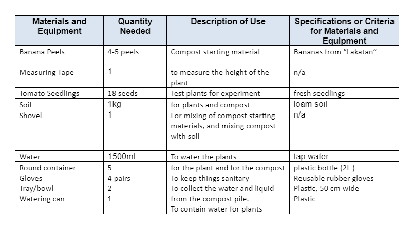

SIP
Determining the Effect of Waste Food to the Growth of Tomatoes.
Background and Signifance of the Study:
Composting benefits communities and the environment by reducing waste, improving soil quality, and improving society. As it enables people to dispose of their organic waste and allow it to decompose so they can use it as fertilizer, therefore, composting is crucial for the environment and the community. Another benefit is that people can contribute to the spread of this positive outlook by educating others, especially young people, who will ultimately be the ones to care for and protect the environment. The institution we partnered with can make use of or benefit from composting by being able to plant their own produce and reduce waste. Composting is advantageous to the community because it restores soil nutrients, makes barren land fertile again, and helps build a robust and long-lasting agroecosystem. To keep the environment safe and healthy, community involvement can encourage composting. For the prevention of waste, the community may benefit from making stuff like leftover food into a compostable material that will be utilized as a plant fertilizer. Composting promotes plant development, making the environment and neighborhood greener. Greener communities can improve individuals' social and physical wellbeing. Having a healthy lifestyle and being able to breathe the fresh air that plants provide. It can also help the economy by allowing gardeners to save money on gardening supplies. This proposal can be a solution to one of their problems, which is flooding, bad waste management, and diseases that can be caught through it.
Statement of the problem:
- How can composting waste foods help improve the plant's growth rate?
The issue that the study is trying to solve is how to use leftover food as fertilizer to encourage faster plant growth. I make this claim based on my own observations that the composted food waste produced by others will be able to speed up plant growth. I am able to say this because, according to my own research, the composted material will become a fertilizer that will help us nourish the soil that we are using for our plant, increasing the likelihood that the plant will grow healthily.
Hypothesis:
If we use the composted fertilizer on our tomato, then our plant’s growth rate will be boosted.
Review Related Literature:
Compost is valued as a soil conditioner and for supplying essential plant nutrients, some of which are frequently deficient in synthetic fertilizers. Tomatoes benefit from compost's slow-release action because they are heavy feeders over a long season. The simple addition of composted yard wastes accelerated tomato growth by three weeks in a study conducted by the University of Connecticut. Compost and vermicompost were found to be substrates that sustained tomato growth in a study published in the 2009 issue of "Spanish Journal of Agricultural Research."
Variable
Independent:
Organic compost material (Food Waste; Banana Peel)
Dependent: Height of the plant (Tomato)
Controlled:
- Moisture content, nutrition (carbon: nitrogen ratio of the material), temperature and oxygen (aeration).
- Type of plants (Tomato)
- Type of soil
- Location of the set up
- Amount of sunlight
- Amount of water
- Amount of temperature
- Type of fertilizer
Treatments/Set-Ups:

Data:

Materials Needed:

PROCEDURES
Producing or Sourcing the Compost Material:
1. Start your compost pile on bare earth. This allows worms and other beneficial organisms to aerate the compost and be transported to your garden beds.
2. Lay twigs or straw first, a few inches deep. This aids drainage and helps aerate the pile.
3. Add compost materials in layers, alternating moist and dry. Moist ingredients are food scraps, tea bags, seaweed, etc. Dry materials are straw, leaves, sawdust pellets and wood ashes. If you have wood ashes, sprinkle in thin layers, or they will clump together and be slow to break down.
4. Add manure , green manure (clover, buckwheat, wheatgrass, grass clippings) or any nitrogen source. This activates the compost pile and speeds the process along.
5. Keep compost moist. Water occasionally, or let rain do the job.
6. Cover with anything you have – wood, plastic sheeting, carpet scraps. Covering helps retain moisture and heat, two essentials for compost. Covering also prevents the compost from being over-watered by rain. The compost should be moist, but not soaked and sodden.
7. Turn. Every few weeks give the pile a quick turn with a pitchfork or shovel. This aerates the pile. Oxygen is required for the process to work, and turning “adds” oxygen. You can skip this step if you have a ready supply of coarse material like straw. Once you’ve established your compost pile, add new materials by mixing them in, rather than by adding them in layers. Mixing, or turning, the compost pile is key to aerating the composting materials and speeding the process to completion. If you want to buy a composter, rather than build your own compost pile, you may consider buying a rotating compost tumbler which makes it easy to mix the compost regularly.
Sourcing and Preparing the Test Plants and Plant Soil:
1. You will first need to source the banana peels, tomato seedlings, and planting soil from the local market from Illustre, Bangkerohan, and more. When the materials are ready, take your pot or container and place holes underneath in order to let oxygen in easily.
2. Next, gather all your soil, banana peels, and tomato seedlings into one place, and start cutting down half of the compost starter (banana peels) in order to test which one of them have better effects for the plant.
3. Layer the bottom part with soil that’s exactly one inch, and another inch of banana peels on top. You will use the measuring tape in order to make sure of the amount. From that, you will start alternating with both of these materials.
4. Place gardening soil, as the last layer in order to conceal the smell and quicken the process of the composting.
5. Take the shovel, and press it on the top layer in order to gently mix the materials, without breaking them.
6. Next, place a shallow tub or tray under the pot to collect future drained water from the plant and prevent spilling.
7. Water the pot thoroughly, with 600-100 ml of water. But make sure to do this in full sunlight to break down faster, but will also need more water.
8. Cover your compost with a lid in order to retain moisture from the pile.
9. Keep the compost moist but not too wet, and check on the drainage pot underneath in order to reuse the liquid due to them having useful contents within that can be used to help the compost process.
10. Turn the compost every 2-3 days using the shovel in order to put oxygen in the pile which also speeds up the process.
Making observations and/or measurements about the Compost:
Different microorganisms (bacteria, fungus, and protozoa) degrade organic waste during the composting process. Microorganisms decompose organic food to make compost, a simpler material.
The aerobic composting produces carbon dioxide, water vapor, and a dark-brown or black organic waste. Compost is a substance that is approximately half the volume of the original material and may be used to enhance soil in farm areas and gardens.
Dosage and Frequency of Compost Application to the Test Plants:
The application for the test plant will be done every 3 days.
Making observations and/or measurements about the Test Plants:
The measurements will be done every 3 days for at least 2 weeks, in sync with the times we water the plants and turning the compost. In order for the compost to have time to process properly.
Visual Documentation: